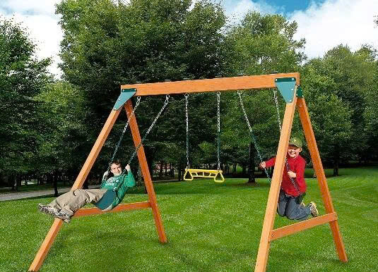
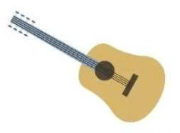
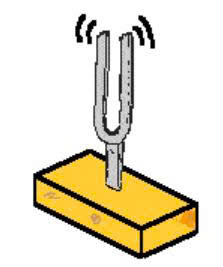
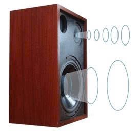

I. Dao động và sóng
1. Dao động
Các chuyển động qua lại quanh một vị trí cân bằng được gọi là dao động.
Ví dụ:
- Dao động của quả lắc.
- Dao động của chiếc võng.
- Dao động của chiếc xích đu.

2. Sóng
Sóng là sự lan truyền dao động trong môi trường.
Ví dụ: Sóng nước.
II. Nguồn âm
Nguồn âm là nguồn phát ra âm. Mọi nguồn âm đều dao động.
Ví dụ:
- Mặt trống.
- Dây đàn.
- Âm thoa.


III. Sóng âm
Sóng âm là sự lan truyền dao động của nguồn âm trong môi trường.
Sóng âm truyền từ nguồn âm theo mọi phương ra môi trường xung quanh.
Ví dụ: Âm thanh do loa phát ra truyền theo mọi hướng.

IV. Các môi trường truyền âm
Môi trường truyền được sóng âm gọi là môi trường truyền âm.
- Sóng âm truyền được trong chất rắn.
- Sóng âm truyền được trong chất lỏng.
- Sóng âm truyền được trong chất khí.
- Sóng âm không truyền được trong chân không.
Ghi nhớ
- Dao động là chuyển động qua lại quanh vị trí cân bằng.
- Sóng là sự lan truyền dao động trong môi trường.
- Nguồn âm đều dao động.
- Sóng âm truyền được trong chất rắn, chất lỏng và chất khí.
- Sóng âm không truyền được trong chân không.